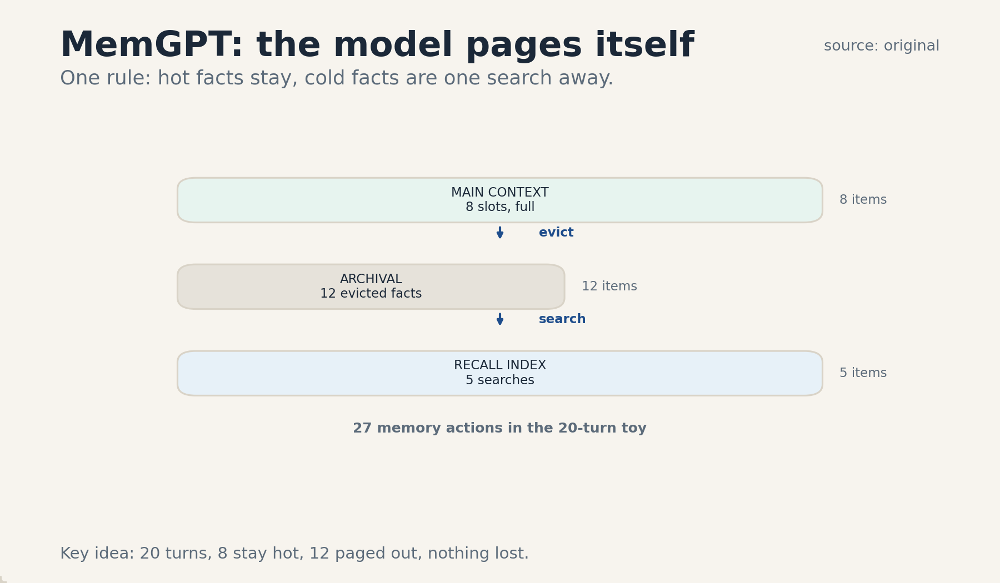
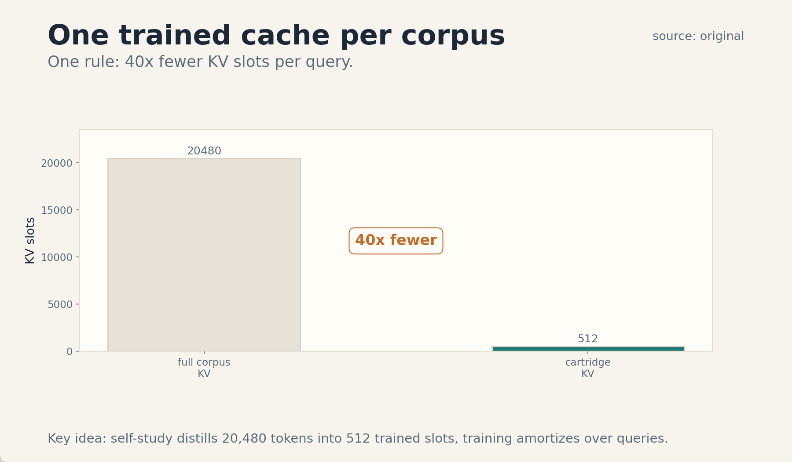
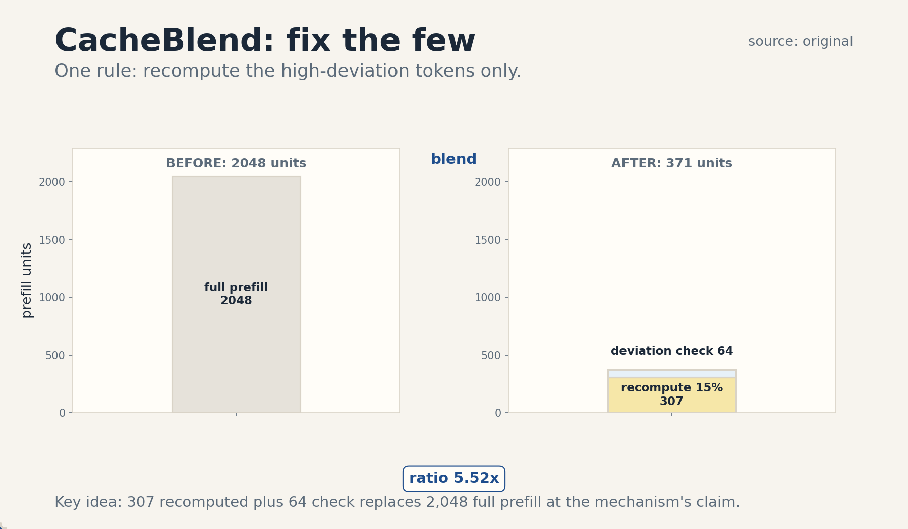

U06 · Memory, caches, and long-context representations
U06 , Memory, caches, and long-context representations
Course: Stanford CS329A, Autumn 2025. Official session 14 (Nov 7), Augmenting Agents with Memory, guest: Junchen Jiang (LMCache, UChicago), schedule line only. Baseline: 2026-10-07.
Claim class: mechanisms are taught from the requested inventory with SOURCE
ATTRIBUTION PENDING. Paper titles come from the verified official schedule
(see ../source_manifest.md). No paper contents were individually inspected
by this builder. The guest talk is taught at schedule-line level only, per
the honesty note. Toy numbers are computed and traceable. No benchmark
numbers are claimed.
Unit objectives
After this unit the learner can: describe the MemGPT memory hierarchy, issue memory actions, separate context from persistence, explain Cartridges and self-study, reuse KV caches, describe CacheBlend’s selective recompute, run retrieval inside the agent loop, measure compression loss, invalidate stale memory, enforce tenant privacy, judge cross-task transfer, and run a controlled memory comparison.
Dependencies
P14 (transformer mechanics, KV caching), P19 (retrieval), P20 (tools,
agent state). Local remediation is inside C05. The shared bridges live
at ../shared/prerequisites/.
Four-way link used in this unit
Intuition: the model cannot hold everything, so memory is a hierarchy: hot facts in context, warm facts in an index, cold facts in a store. Equation: KV bytes = 2 * layers * kv_heads * tokens * d_head * bytes. Code: a memory action is a function call the model makes to itself. Observation: reuse and compression trade memory for correctness, and the tradeoff is measurable.
C01 MemGPT
1. Source mapping, scope, objectives, dependencies. Session 14, Augmenting Agents with Memory. Reading pointer: MemGPT: Towards LLMs as Operating Systems (SOURCE ATTRIBUTION PENDING). Scope: the OS paging metaphor for agent memory. Objective: name the three memory tiers and run one paging decision on a toy. Dependencies: P14, P20.
2. Motivating question and tiny toy. Question: the conversation is 20 turns long but the context holds 8 items. Where do the other 12 go? Toy: 8 stay in main context, 12 are evicted to archival storage. A recall index remembers what went where.
3. Plain-language mental model. Treat the context window like RAM and the rest like disk. Main context holds what the agent needs now: system instructions, the recent messages, and a working scratchpad it can rewrite. Archival storage holds everything else, and recall storage holds summaries that point at it. When RAM fills, the agent pages things out itself, with function calls, instead of crashing.
4. Variables, units, shapes, assumptions. Main context: system instructions + FIFO message queue + working context (writable). Archival storage: unbounded text store. Recall storage: searchable summaries. Memory pressure: tokens used over tokens available. Assumptions: the model can call memory functions, eviction is explicit, nothing is silently dropped.
5. Justified derivation or mechanism. The mechanism is virtual memory for prompts. The OS analogy is exact: a fixed fast tier, a large slow tier, and explicit page movement between them. The model manages its own pages because only it knows what is hot. Memory pressure warnings (the system telling the model it is nearly full) trigger consolidation: summarize, archive, and free.
6. Computed numerical example using the same objects. Toy: 20 conversation turns arrive, main context holds 8 items. Turns 1-8 fill it. Turns 9-20: each arrival evicts the oldest non-pinned item to archival storage. Final state: 8 in main context, 12 in archival, 0 lost. Eviction count: 12. If turns 13-20 are later needed, the agent searches archival storage and pages them back.
7. Algorithm and original minimal implementation.
def page_in(item, main, archival, capacity=8):
if len(main) >= capacity:
oldest = main.pop_oldest_unpinned()
archival.insert(oldest)
main.append(item)
8. Correctness checks and expected output. Check: main never exceeds capacity. Check: every evicted item lands in archival. Check: the toy ends with 8 in main, 12 in archival.
9. Complexity, memory, statistical efficiency, stability, practical costs. Eviction is O(1) per item. The cost is in the model’s decisions: each page move is a function call. Stability: bad eviction loses hot facts, the recall index is the safety net.
10. Nearest alternatives and precise selection boundaries. Bigger context: pick when the budget allows and the task is short. Truncation: pick never for agents, it silently drops. MemGPT paging: pick for long-lived agents with mixed hot/cold facts.
11. Failure case, broken assumption, counterexample. Break explicit eviction: the queue is FIFO with no pinning, and the system instructions get evicted at turn 9. The agent forgets its own role. Counterexample: a task with 5 turns: paging adds machinery for nothing, plain context wins.
12. Research reading and falsifiable extension. Reading: MemGPT (SOURCE ATTRIBUTION PENDING). Extension: hypothesis: pinned working context beats plain FIFO on long-horizon tasks. Falsification: equal task success.
13. Breadth recall, deep oral ladder, unfamiliar transfer. Recall: name the three tiers. Ladder: define the tiers, run the toy, justify the OS analogy, code the page-in, state the call cost, compare with truncation, debug the evicted-instructions failure, critique model-managed eviction, design the pinning experiment. Transfer: the same tiers organize a database buffer pool.
14. Lab/exercises with answers separated.
E1.1: compute the final split for 30 turns at capacity 8. E1.2:
explain the OS analogy in two sentences. E1.3: name the
evicted-instructions failure. Answers: ../keys/u06_answers.md.
15. Visual units, provenance, accessibility, audit rows.
PNG ../visuals/u06_fig02.png: the three tiers with the toy
counts (8 in main, 12 in archival, 5 searches), one rule: the
model pages itself. Source: original. Alt text: three boxes,
main context full at 8, archival at 12, recall index with 5
search arrows. Logged in ../visual_audit.md.

C02 memory actions
1. Source mapping, scope, objectives, dependencies. Session 14. Scope: the function-call API the agent uses to manage its own memory. Objective: trace the action sequence of a toy 20-turn run. Dependencies: C01.
2. Motivating question and tiny toy.
Question: how does the agent actually move a fact? Toy: the call
archival_memory_insert("user prefers morning meetings") stores
one fact. The call archival_memory_search("meeting preference")
brings it back. Memory work is function calls, not magic.
3. Plain-language mental model. The agent has hands for its memory. Core hands rewrite the scratchpad: append a note, replace a line. Archival hands store and search the big pile. Every hand is a typed function call with arguments the model fills in. The trace of calls is the audit trail of what the agent remembered.
4. Variables, units, shapes, assumptions. Core actions: append, replace (working context). Archival actions: insert, search (query string, top_k). Conversation search: over past messages. Assumptions: calls are logged, the store is durable, search returns ranked hits.
5. Justified derivation or mechanism. The mechanism is self-editing memory through tools. The model already knows how to call tools (P20). Memory actions are tools whose effects persist across turns. This closes the loop: the agent reads its memory, acts, writes back what it learned. The alternative (the scaffold managing memory silently) hides the decisions from the trace.
6. Computed numerical example using the same objects. Toy: 20-turn trace. Actions: core appends 8 (notes taken), archival inserts 12 (evicted facts), archival searches 5 (facts needed again), core replaces 2 (notes updated). Total memory actions: 27. The action log shows exactly what the agent chose to keep.
7. Algorithm and original minimal implementation.
def memory_step(agent, turn):
if turn.needs_note():
agent.call("core_memory_append", text=turn.note)
if turn.needs_fact():
hits = agent.call("archival_memory_search",
query=turn.query, top_k=3)
turn.attach(hits[0])
8. Correctness checks and expected output. Check: every insert has a matching stored fact. Check: searches return at most top_k hits. Check: the toy totals 27 actions.
9. Complexity, memory, statistical efficiency, stability, practical costs. Each action is one model call plus store I/O. Search cost grows with the archive size. Index it. Stability: a bad query retrieves noise, the agent must judge hits.
10. Nearest alternatives and precise selection boundaries. Scaffold-managed memory: pick when the agent is simple and the trace does not matter. Full-context stuffing: pick for short tasks. Memory actions: pick when the agent lives long and the trace must show its memory work.
11. Failure case, broken assumption, counterexample. Break the log: actions are not recorded, and a fact appears in the scratchpad with no provenance. Nobody can tell if the agent remembered or hallucinated. Counterexample: an agent that inserts every turn without ever searching: write-only memory, pure cost.
12. Research reading and falsifiable extension. Reading: MemGPT memory functions (SOURCE ATTRIBUTION PENDING). Extension: hypothesis: logged memory actions cut hallucinated facts versus silent memory. Falsification: equal hallucination rates.
13. Breadth recall, deep oral ladder, unfamiliar transfer. Recall: list the five actions. Ladder: define the API, run the toy, justify tools-for-memory, code the step, state the call cost, compare with scaffold memory, debug the unlogged action, critique search noise, design the logged-vs-silent experiment. Transfer: the same action log audits a human assistant’s notes.
14. Lab/exercises with answers separated.
E2.1: total the actions in the toy trace. E2.2: explain
self-editing memory in two sentences. E2.3: name the
write-only failure. Answers: ../keys/u06_answers.md.
15. Visual units, provenance, accessibility, audit rows.
Shares ../visuals/u06_fig02.png with C01 (actions annotate the
arrows). Table plate in item 6 (action, count). Logged in
../visual_audit.md.
C03 context versus persistence
1. Source mapping, scope, objectives, dependencies. Session 14. Scope: the decision of what lives in the context window and what lives in the store. Objective: apply the paging rule to a toy fact set. Dependencies: C01, C02.
2. Motivating question and tiny toy. Question: 100 facts, room for 8. Which 8? Toy: 3 pinned (role, task, user name), 5 hottest by recency and reuse count. The other 92 stay in archival storage behind the search index.
3. Plain-language mental model. Context is the desk, persistence is the filing cabinet. The desk holds what this turn needs: small, fast, expensive per token. The cabinet holds everything: big, slow, cheap per byte. The paging rule decides what earns desk space: pinned facts always, hot facts usually, cold facts never until searched.
4. Variables, units, shapes, assumptions. Hotness score: recency times reuse count. Pinned set: never evicted. Context budget: tokens. Store budget: bytes, cheap. Assumptions: hotness predicts need, the index finds cold facts fast enough.
5. Justified derivation or mechanism. The mechanism is economic: a token in context costs attention over every future token (quadratic in the worst case) and money, while a byte in the store costs almost nothing until retrieved. The rule puts a fact in context only when its expected reuse beats the retrieval cost. Pinned facts skip the math: the role and the task are needed every turn.
6. Computed numerical example using the same objects. Toy: 100 facts. Pinned: 3. Hotness ranking of the rest: top 5 take the remaining desk slots. Desk: 8 facts. Cabinet: 92 facts. Retrieval cost per cold fact: one search call. If a cold fact is needed twice, its lifetime cost is 2 searches versus permanent desk rent: the rule keeps it in the cabinet.
7. Algorithm and original minimal implementation.
def page_rule(facts, pinned, capacity=8):
desk = list(pinned)
rest = sorted((f for f in facts if f not in pinned),
key=lambda f: f.hotness, reverse=True)
desk += rest[:capacity - len(desk)]
return desk
8. Correctness checks and expected output. Check: pinned facts are always on the desk. Check: the desk never exceeds capacity. Check: the toy desk has 8 facts.
9. Complexity, memory, statistical efficiency, stability, practical costs. Sorting by hotness is O(n log n) per turn, fine for hundreds of facts. The risk is hotness drift: yesterday’s hot fact squats on the desk. Decay the scores.
10. Nearest alternatives and precise selection boundaries. Everything in context: pick when n is small and money is free. Everything in the store: pick when latency does not matter. Paging rule: pick when the fact set is large and mixed.
11. Failure case, broken assumption, counterexample. Break the hotness prediction: a cold fact is suddenly needed every turn (the task pivots). The agent pays a search per turn until the scores catch up. Counterexample: pinning 8 facts at capacity 8: the desk is frozen, hotness never matters.
12. Research reading and falsifiable extension. Reading: memory hierarchy designs (SOURCE ATTRIBUTION PENDING). Extension: hypothesis: hotness paging beats recency-only paging on long tasks. Falsification: equal success.
13. Breadth recall, deep oral ladder, unfamiliar transfer. Recall: define desk, cabinet, hotness. Ladder: define the split, run the toy, justify the economics, code the rule, state the sort cost, compare with all-in-context, debug the pivot failure, critique hotness, design the paging experiment. Transfer: the same rule manages CPU caches.
14. Lab/exercises with answers separated.
E3.1: compute the desk split for the toy. E3.2: explain the
desk-versus-cabinet economics in two sentences. E3.3: name the
frozen-desk failure. Answers: ../keys/u06_answers.md.
15. Visual units, provenance, accessibility, audit rows.
Table plate in the lesson (item 6: tier, count). No separate
PNG. Logged in ../visual_audit.md.
C04 Cartridges/self-study
1. Source mapping, scope, objectives, dependencies. Session 14. Reading pointer: Cartridges: Lightweight and general-purpose long context representations via self-study (SOURCE ATTRIBUTION PENDING). Scope: a trained compact KV cache per corpus. Objective: compute the memory ratio on a toy. Dependencies: P14.
2. Motivating question and tiny toy. Question: every query stuffs the same 20,480-token manual into context. Must we pay the full KV price every time? Toy: train one 512-slot cartridge for the manual. Memory per query: 512 slots instead of 20,480 tokens, a 40x cut.
3. Plain-language mental model. A cartridge is a compressed memory of one corpus, learned offline. Instead of re-reading the manual at every query, the model loads the cartridge (a small trained KV prefix) and answers from it. The training recipe is called self-study: the model quizzes itself about the corpus, generating synthetic conversations, then distills the full-context behavior into the small cache.
4. Variables, units, shapes, assumptions. Corpus: N tokens. Cartridge: p virtual slots, p << N, with per-layer KV tensors of shape (kv_heads, p, d_head). Training: synthetic conversations plus a context-distillation objective against the model with the corpus in context. Assumptions: the corpus is queried many times (training amortizes), the base model is frozen.
5. Justified derivation or mechanism. The mechanism is distillation into KV parameters. Naive next-token training on the corpus teaches recitation, not question answering. Self-study fixes this in two steps: first, the model generates its own Q/A-style conversations about the corpus (supervision that looks like the downstream task). Second, the cartridge trains to match the output distribution of the model with the full corpus in context (context distillation), so the small cache imitates the big context’s behavior.
6. Computed numerical example using the same objects. Toy: corpus N = 20,480 tokens, cartridge p = 512 slots. KV memory ratio: 20,480 / 512 = 40. The cartridge holds 40x fewer slots than the full prefill. Training cost is paid once. With 1,000 queries against the manual, the per-query training share is 1/1000 of the one-time cost.
7. Algorithm and original minimal implementation.
def cartridge_memory(n_tokens, p_slots):
return n_tokens / p_slots # compression ratio
def self_study(corpus):
convos = model.quiz_itself(corpus) # synthetic data
cart = init_cartridge(p=512)
distill(cart, convos, teacher=model_with(corpus))
return cart
8. Correctness checks and expected output. Check: the ratio is 40 for the toy. Check: the teacher sees the full corpus, the student sees only the cartridge. Check: p << N.
9. Complexity, memory, statistical efficiency, stability, practical costs. Training: one-time, backprop through the frozen model. Serving: 40x less KV memory per query in the toy. Stability: a changed corpus needs retraining, the cartridge is a snapshot.
10. Nearest alternatives and precise selection boundaries. Full context every query: pick when the corpus changes often. RAG over the corpus: pick when queries need few passages. Cartridge: pick when one stable corpus serves many queries.
11. Failure case, broken assumption, counterexample. Break corpus stability: the manual updates weekly, the cartridge answers from the old edition. Counterexample: a corpus queried twice: training never amortizes, full context is cheaper.
12. Research reading and falsifiable extension. Reading: Cartridges (SOURCE ATTRIBUTION PENDING). Extension: hypothesis: self-study beats naive next-token training on held-out questions. Falsification: equal quality.
13. Breadth recall, deep oral ladder, unfamiliar transfer. Recall: define cartridge and self-study. Ladder: define the object, run the toy, justify distillation over recitation, code the recipe, state the amortization, compare with RAG, debug the stale-corpus failure, critique the snapshot, design the training-objective experiment. Transfer: the same idea compresses a codebase for repeated questions.
14. Lab/exercises with answers separated.
E4.1: recompute the ratio for N = 40,960 and p = 512. E4.2:
explain self-study in two sentences. E4.3: name the
stale-corpus failure. Answers: ../keys/u06_answers.md.
15. Visual units, provenance, accessibility, audit rows.
PNG ../visuals/u06_fig03.png: full KV bar versus cartridge
bar, one rule: 40x fewer slots per corpus. Source: original.
Alt text: two bars, 20,480 tokens versus 512 slots, ratio
labeled 40x. Logged in ../visual_audit.md.

C05 cache reuse
1. Source mapping, scope, objectives, dependencies. Session 14, plus guest Junchen Jiang (LMCache, UChicago), schedule line only. Scope: reusing computed KV caches across requests. Objective: compute the token savings of prefix reuse on a toy. Dependencies: P14. Local remediation: the KV cache is defined in item 4.
2. Motivating question and tiny toy. Question: 100 requests share the same 2,000-token system prompt. Must each pay the prefill? Toy: cache the prefix once. Saved tokens: 100 * 2,000 = 200,000. The first request pays, the rest ride free.
3. Plain-language mental model. The KV cache is the model’s notes on the prompt so far. When a new prompt starts with text the model has already processed, the old notes are still valid: attention over the same prefix gives the same keys and values. Reuse is a lookup, not a recompute. The guest’s system (LMCache) extends this to shared use caches across serving instances.
4. Variables, units, shapes, assumptions. KV cache: per-layer keys and values for each prompt token, shape (layers, 2, kv_heads, tokens, d_head). Prefix hit: the new prompt’s first m tokens match a cached prompt’s first m tokens. Assumptions: deterministic model, same tokenization, positional encodings consistent with the cached positions.
5. Justified derivation or mechanism. The mechanism is prefix equality. In a causal transformer, token i’s keys and values depend only on tokens 1..i. If two prompts share the first m tokens, the first m KV entries are identical, so the second prompt can start its prefill at token m+1. The saving is exactly the shared prefix length. No approximation is involved: it is the same computation, skipped.
6. Computed numerical example using the same objects. Toy: 100 requests, shared 2,000-token prefix, 500 fresh tokens each. Without reuse: 100 * 2,500 = 250,000 prefill tokens. With reuse: 2,000 + 100 * 500 = 52,000. Saved: 198,000 tokens, about 79 percent of prefill. The cache stores one 2,000-token KV block.
7. Algorithm and original minimal implementation.
def prefill_with_cache(tokens, cache):
m = longest_prefix_match(tokens, cache)
kv = cache.load(m) # reuse
kv = model.prefill(tokens[m:], kv) # compute the rest
cache.store(tokens, kv)
return kv
8. Correctness checks and expected output. Check: the reused prefix is byte-identical. Check: outputs match a full prefill exactly. Check: the toy saves 198,000 tokens.
9. Complexity, memory, statistical efficiency, stability, practical costs. Lookup is O(1) with a radix tree. Memory: one KV block per distinct prefix. Stability: any tokenization drift breaks the match silently, pin the tokenizer.
10. Nearest alternatives and precise selection boundaries. Full recompute: pick when prompts share nothing. Prefix cache: pick when prompts share literal prefixes (system prompts, few-shot blocks). Non-prefix reuse: needs C06.
11. Failure case, broken assumption, counterexample. Break positional consistency: the cached block was computed at positions 0..1999 but the new prompt places it at 500..2499. The KV entries are position-dependent, reuse is wrong. Counterexample: 100 fully distinct prompts: the cache never hits, pure overhead.
12. Research reading and falsifiable extension. Reading: LMCache line from the guest session (schedule line only, SOURCE ATTRIBUTION PENDING). Extension: hypothesis: cross-instance cache sharing beats per-instance caches on hit rate. Falsification: equal hit rates.
13. Breadth recall, deep oral ladder, unfamiliar transfer. Recall: define the KV cache and a prefix hit. Ladder: define the object, run the toy, justify the equality, code the prefill, state the lookup cost, compare with recompute, debug the position-shift failure, critique exact-match, design the sharing experiment. Transfer: the same idea caches compiled regexes across requests.
14. Lab/exercises with answers separated.
E5.1: recompute the savings for 50 requests. E5.2: explain why
reuse is exact in two sentences. E5.3: name the position-shift
failure. Answers: ../keys/u06_answers.md.
15. Visual units, provenance, accessibility, audit rows.
Table plate in the lesson (item 6: with/without reuse).
No separate PNG. Logged in ../visual_audit.md.
C06 CacheBlend
1. Source mapping, scope, objectives, dependencies. Session 14. Reading pointer: CacheBlend: Fast Large Language Model Serving for RAG with Cached Knowledge Fusion (SOURCE ATTRIBUTION PENDING). Scope: reusing KV caches of non-prefix chunks. Objective: compute the recompute saving on a toy. Dependencies: C05.
2. Motivating question and tiny toy. Question: four retrieved chunks appear in a new order. Prefix caching helps only the first. What about the rest? Toy: 4 chunks of 512 tokens = 2,048 tokens. Recompute only 15 percent (307 tokens) plus a 64-unit quality check: 371 units versus 2,048, about a 5.5x cut.
3. Plain-language mental model. Splicing cached chunks in a new order is almost right but not quite: each chunk’s KV was computed without seeing its new neighbors, so cross-attention is gone. The fix is surgical: find the tokens whose KV values moved the most once the neighbors are visible (high-KV-deviation tokens, about 10-15 percent), recompute only those, and keep the rest. A small repair buys back full-prefill quality.
4. Variables, units, shapes, assumptions. Chunks c_1..c_k with precomputed KV each. Recompute ratio r (toy 0.15). HKVD set: tokens with the largest KV deviation after a shallow recompute pass. Assumptions: the deviation is concentrated in few tokens, the shallow pass ranks them well.
5. Justified derivation or mechanism. The mechanism is selective recompute. Step one: recompute the first layers fully to get accurate queries, keys, and values for the new ordering. Step two: compare the fresh values with the cached ones and pick the top-r tokens by deviation. Step three: recompute only those tokens’ KV in place. The insight: repositioning corrupts few tokens badly and most tokens barely, so fixing the few restores quality at a fraction of the cost. The recompute pipelines with the cache fetch, hiding latency.
6. Computed numerical example using the same objects. Toy: 4 chunks, 512 tokens each, 2,048 total. Recompute: 0.15 * 2,048 = 307 tokens. Quality check: 64 units. Total: 371 units. Full prefill: 2,048 units. Ratio: 2,048 / 371 = 5.52. The bill is one-fifth, the quality is the full-prefill quality by the mechanism’s claim (attribution pending, the toy checks the arithmetic not the claim).
7. Algorithm and original minimal implementation.
def cache_blend(chunks, r=0.15):
kv = concat(cached_kv(c) for c in chunks)
fresh = shallow_recompute(chunks) # first layers
dev = kv_deviation(fresh, kv)
hkvd = top_k(dev, int(r * total_tokens(chunks)))
kv = recompute_in_place(kv, hkvd)
return kv
8. Correctness checks and expected output. Check: the HKVD set has r * N tokens. Check: untouched tokens keep cached KV. Check: the toy ratio is 5.52.
9. Complexity, memory, statistical efficiency, stability, practical costs. Cost: r * N recompute plus the shallow pass. Memory: the chunk caches plus deviation buffers. Stability: if deviation is not concentrated, r must rise and the saving shrinks.
10. Nearest alternatives and precise selection boundaries. Full recompute: pick when chunks are few or order is fixed. Prefix-only cache: pick when chunks keep their order. CacheBlend: pick for RAG with reordered, reused chunks.
11. Failure case, broken assumption, counterexample. Break concentration: every token’s KV shifts a lot in the new order. The HKVD set is the whole input, and the method is full recompute with extra steps. Counterexample: chunks that never repeat: no cache exists, nothing to blend.
12. Research reading and falsifiable extension. Reading: CacheBlend (SOURCE ATTRIBUTION PENDING). Extension: hypothesis: the HKVD set is stable across queries for one chunk set. Falsification: the set changes every query.
13. Breadth recall, deep oral ladder, unfamiliar transfer. Recall: define HKVD tokens and the ratio. Ladder: define the problem, run the toy, justify concentration, code the blend, state the shallow-pass cost, compare with full recompute, debug the diffuse-deviation failure, critique the ranking, design the stability experiment. Transfer: the same selective fix applies to cached database query plans.
14. Lab/exercises with answers separated.
E6.1: recompute the ratio at r = 0.25. E6.2: explain the
surgical fix in two sentences. E6.3: name the diffuse-deviation
failure. Answers: ../keys/u06_answers.md.
15. Visual units, provenance, accessibility, audit rows.
PNG ../visuals/u06_fig01.png: full-prefill bar versus blend
bar (recompute plus check), one rule: fix the few, keep the
many. Source: original. Alt text: two bars, 2,048 units versus
371 units, ratio 5.5x. Logged in ../visual_audit.md.

C07 retrieval
1. Source mapping, scope, objectives, dependencies. Session 14. Scope: the retrieval step inside the agent’s memory loop. Objective: compute precision and recall on a toy. Dependencies: P19, C02.
2. Motivating question and tiny toy. Question: the agent needs a fact from the archive. How good was the search? Toy: 50 candidate docs, 8 relevant. The retriever returns 5, of which 3 are relevant. Precision: 3/5 = 0.60. Recall: 3/8 = 0.375.
3. Plain-language mental model. Retrieval is the agent’s eyes on its own past. The query goes out, ranked documents come back, the agent reads the top few. Precision asks: of what came back, how much was useful. Recall asks: of what exists, how much came back. Agents usually need precision more: one wrong fact poisons the trace, one missed fact just costs another query.
4. Variables, units, shapes, assumptions. Corpus D, relevant set R, returned set S (top_k). Precision = |S cap R| / |S|. Recall = |S cap R| / |R|. Assumptions: relevance is binary and judgeable, the index covers the archive.
5. Justified derivation or mechanism. The mechanism is ranked retrieval inside the loop: the agent calls search, attaches the top hits to its context, and reasons over them. The loop matters because the agent can re-query: a bad first query is not fatal, the trace shows the refinement. Precision binds harder than recall here because the agent reads what returns: noise enters the reasoning, silence does not.
6. Computed numerical example using the same objects. Toy: 50 docs, 8 relevant, top 5 returned, 3 relevant among them. Precision 0.60, recall 0.375. The agent reads 5 docs and gets 3 useful facts. A second query with new terms could raise recall. It cannot fix the 2 noise docs already read except by judging them.
7. Algorithm and original minimal implementation.
def memory_recall(agent, query, top_k=5):
hits = agent.call("archival_memory_search",
query=query, top_k=top_k)
judged = [h for h in hits if agent.judge(h, query)]
return judged
8. Correctness checks and expected output. Check: at most top_k hits return. Check: the toy precision is 0.60 and recall is 0.375. Check: judged filters the noise.
9. Complexity, memory, statistical efficiency, stability, practical costs. Search cost per query plus reading cost per hit. Small top_k is cheap and precise. Large top_k buys recall with noise. Stability: the index must track inserts, or new facts are invisible.
10. Nearest alternatives and precise selection boundaries. Full scan: pick when the archive is tiny. Bigger top_k: pick when recall binds. Precision-first with re-query: pick for agent loops where noise poisons reasoning.
11. Failure case, broken assumption, counterexample. Break the index: inserts from C02 never reach the search index. The agent’s own notes are unfindable, and it re-derives them every time. Counterexample: a query with no relevant docs: precision is 0/5, the agent must say “not found”, not guess.
12. Research reading and falsifiable extension. Reading: retrieval for agents (P19 bridge). Extension: hypothesis: judge-filtered hits beat raw top_k on downstream task success. Falsification: equal success.
13. Breadth recall, deep oral ladder, unfamiliar transfer. Recall: define precision and recall. Ladder: define the sets, run the toy, justify precision-first, code the recall, state the query cost, compare with full scan, debug the stale-index failure, critique binary relevance, design the filter experiment. Transfer: the same metrics grade web search.
14. Lab/exercises with answers separated.
E7.1: recompute precision and recall for 4 relevant in top 5.
E7.2: explain why precision binds in two sentences. E7.3: name
the stale-index failure. Answers: ../keys/u06_answers.md.
15. Visual units, provenance, accessibility, audit rows.
Table plate in the lesson (item 6: docs, relevant, returned).
No separate PNG. Logged in ../visual_audit.md.
C08 compression loss
1. Source mapping, scope, objectives, dependencies. Session 14. Scope: what summarization and eviction destroy. Objective: measure the loss on a toy. Dependencies: C01, C03.
2. Motivating question and tiny toy. Question: 10 facts are summarized into 3 lines. What was lost? Toy: 7 facts dropped. Later the agent needs 2 of the dropped facts. Loss: 2 needed facts gone, unrecoverable from the summary.
3. Plain-language mental model. Compression is amnesia on purpose. A summary keeps the gist and drops the details. The dropped details are gone: no clever prompt gets them back from the summary. The only honest way to handle loss is to measure it: log what was dropped, and check later whether anything dropped was needed.
4. Variables, units, shapes, assumptions. Fact set F, summary S, dropped D = F - S. Needed-later set N. Loss: |D cap N|, the dropped facts that were needed. Assumptions: need is observable after the fact, the drop log exists.
5. Justified derivation or mechanism. The mechanism is the drop log. Every compression step records what it removed. Later, when the agent needs a fact that is gone, the log says whether it was dropped (compression loss) or never stored (a different bug). Without the log, the two are indistinguishable, and the fix is a guess.
6. Computed numerical example using the same objects. Toy: 10 facts, summary keeps 3, drops 7. Later need: 4 facts, of which 2 were dropped. Loss = 2. Loss rate over needed facts: 2/4 = 0.50. The summary looked fine until the need arrived. The drop log names the 2 lost facts, so the fix is targeted: keep that fact class next time.
7. Algorithm and original minimal implementation.
def compress(facts, keep=3):
summary = summarize(facts, keep)
dropped = [f for f in facts if f not in summary]
log_dropped(dropped) # the honest part
return summary
8. Correctness checks and expected output. Check: kept plus dropped equals the input. Check: the toy loss is 2. Check: the log lists 7 facts.
9. Complexity, memory, statistical efficiency, stability, practical costs. The log costs storage per compression. The measurement needs later needs to be observable. Stability: loss compounds over repeated compressions, measure per level.
10. Nearest alternatives and precise selection boundaries. No compression: pick when the fact set is small. Lossy summary: pick when gist suffices and the log exists. Lossless archive plus summary: pick when details might matter.
11. Failure case, broken assumption, counterexample. Break the log: summaries are written with no drop record. A missing fact could be loss or absence, and tuning the summarizer is blind. Counterexample: a summary that keeps everything: not compression, just copying.
12. Research reading and falsifiable extension. Reading: context compression (SOURCE ATTRIBUTION PENDING). Extension: hypothesis: drop logs cut misdiagnosed memory bugs in half. Falsification: no change.
13. Breadth recall, deep oral ladder, unfamiliar transfer. Recall: define loss and the drop log. Ladder: define the sets, run the toy, justify the log, code the compress, state the log cost, compare with no compression, debug the missing-log failure, critique the loss metric, design the log experiment. Transfer: the same log idea audits lossy image compression.
14. Lab/exercises with answers separated.
E8.1: compute the loss rate for the toy. E8.2: explain the drop
log in two sentences. E8.3: name the missing-log failure.
Answers: ../keys/u06_answers.md.
15. Visual units, provenance, accessibility, audit rows.
Table plate in the lesson (item 6: facts, kept, dropped,
needed, lost). No separate PNG. Logged in ../visual_audit.md.
C09 invalidation
1. Source mapping, scope, objectives, dependencies. Session 14. Scope: expiring stale memory. Objective: compute the stale-answer rate with and without a TTL. Dependencies: C01.
2. Motivating question and tiny toy. Question: the archive says the office is on 5th street. It moved last month. Toy: 100 cached facts, 10 go stale per week. With no invalidation, after 2 weeks about 20 facts are wrong. A 7-day TTL caps the damage.
3. Plain-language mental model. Memory rots. Facts have a shelf life, and the cache does not know it. Invalidation is the expiry date: a time-to-live on each fact, after which the agent must re-fetch. Version stamps are the stronger form: the fact carries the version of the world it came from.
4. Variables, units, shapes, assumptions. Stale rate s per week. TTL t weeks. Expected stale share without invalidation grows with s times age. With TTL t, no fact older than t is served. Assumptions: staleness is detectable on re-fetch, the TTL fits the fact class.
5. Justified derivation or mechanism. The mechanism is expiry. A cached fact is a bet that the world has not changed. The TTL bounds how long the bet runs. The derivation is simple: expected stale answers = queries times the stale share. Shorter TTL means fewer stale answers and more re-fetches. The right TTL is where the two costs cross.
6. Computed numerical example using the same objects. Toy: 100 facts, s = 10 per week. No invalidation, 2 weeks: about 20 stale, so 20 percent of answers from cache are wrong. TTL 7 days: facts older than a week are re-fetched, stale share at most about 10 percent, at the cost of re-fetching the 90 fresh ones weekly too. The tradeoff is visible in one number each.
7. Algorithm and original minimal implementation.
def cached_get(key, ttl_days=7):
fact = store.get(key)
if fact and age(fact) <= ttl_days:
return fact.value
fresh = refetch(key)
store.put(key, fresh)
return fresh.value
8. Correctness checks and expected output. Check: facts older than the TTL are never served. Check: the toy stale share is about 20 percent without TTL. Check: re-fetch updates the stamp.
9. Complexity, memory, statistical efficiency, stability, practical costs. Re-fetch cost per expired fact. Too-short TTLs turn the cache into a pass-through. Stability: different fact classes need different TTLs, one TTL for all is a compromise.
10. Nearest alternatives and precise selection boundaries. No cache: pick when facts change constantly. Infinite TTL: pick never for world facts, fine for math facts. Per-class TTL: pick when the fact classes are known.
11. Failure case, broken assumption, counterexample. Break re-fetch: the source is down, and the TTL expires the only copy. The agent has nothing. Counterexample: a fact that never changes (a birth date): any TTL is pure re-fetch cost, pin it instead.
12. Research reading and falsifiable extension. Reading: cache coherence (P16 bridge). Extension: hypothesis: per-class TTLs beat one global TTL on stale-answer rate. Falsification: equal rates.
13. Breadth recall, deep oral ladder, unfamiliar transfer. Recall: define TTL and the stale share. Ladder: define rot, run the toy, justify expiry, code the get, state the re-fetch cost, compare with no cache, debug the down-source failure, critique one TTL, design the TTL experiment. Transfer: the same tradeoff sizes a CDN cache.
14. Lab/exercises with answers separated.
E9.1: compute the stale share after 3 weeks with no TTL. E9.2:
explain the TTL tradeoff in two sentences. E9.3: name the
down-source failure. Answers: ../keys/u06_answers.md.
15. Visual units, provenance, accessibility, audit rows.
Table plate in the lesson (item 6: weeks, stale, TTL). No
separate PNG. Logged in ../visual_audit.md.
C10 tenant privacy
1. Source mapping, scope, objectives, dependencies. Session 14. Scope: keeping one user’s memory out of another’s. Objective: state the isolation rule and show one leak on a toy. Dependencies: C05.
2. Motivating question and tiny toy. Question: two tenants share one cache server. Can tenant B’s query reuse tenant A’s KV block? Toy: yes by bytes, no by policy. The block contains A’s prompt text. Reuse leaks it.
3. Plain-language mental model. A cache is a shared room. Without walls, one tenant’s notes are readable from another tenant’s chair. The wall is a namespace: every cached entry carries its owner, and a lookup matches the owner first. Sharing across tenants needs explicit consent and a scrubbed, owner-free entry.
4. Variables, units, shapes, assumptions. Tenant id t on every cache entry. Lookup key: (t, content hash). Cross-tenant share: only for entries marked public and scrubbed of tenant data. Assumptions: the id is authenticated, the scrub is verified.
5. Justified derivation or mechanism. The mechanism is namespaced lookup. The cache key includes the tenant, so a hit requires the same owner. The justification is that KV caches are invertible enough to leak prompt text: reusing them across tenants is a data breach, not an optimization. Public entries (a shared system prompt with no tenant data) may be shared, and only those.
6. Computed numerical example using the same objects. Toy: 2 tenants, 1,000 requests each, shared 2,000-token system prompt. Namespaced cache: each tenant caches its own copy, 2 blocks stored. A shared public entry: 1 block stored, both hit it. Saving from sharing: 1 block. The saving is tiny and the risk of a mislabeled entry is a breach: the rule is deny by default.
7. Algorithm and original minimal implementation.
def cache_lookup(tenant, content_hash):
key = (tenant, content_hash)
hit = store.get(key)
if hit:
return hit
public = store.get(("public", content_hash))
return public # only if scrubbed and marked
8. Correctness checks and expected output. Check: tenant B never hits tenant A’s entry. Check: public entries hit for both. Check: the toy stores 2 private blocks or 1 public block.
9. Complexity, memory, statistical efficiency, stability, practical costs. One extra key field per entry. Duplicated blocks cost memory. Stability: a mislabeled public entry is a breach, audit the labeling.
10. Nearest alternatives and precise selection boundaries. Shared cache: pick never for tenant data. Per-tenant cache: pick by default. Shared public entries: pick only for scrubbed, owner-free content.
11. Failure case, broken assumption, counterexample. Break the scrub: the “public” system prompt contains one tenant’s name in an example. Sharing it leaks the name to every tenant. Counterexample: a single-tenant deployment: the namespace is pure overhead, but keep it for the day a second tenant arrives.
12. Research reading and falsifiable extension. Reading: tenant isolation (P21 bridge). Extension: hypothesis: namespace audits catch mislabeled entries before breach. Falsification: breaches persist.
13. Breadth recall, deep oral ladder, unfamiliar transfer. Recall: state the namespace rule. Ladder: define the leak, run the toy, justify deny-by-default, code the lookup, state the duplication cost, compare with a shared cache, debug the bad-scrub failure, critique the overhead, design the audit. Transfer: the same rule isolates database schemas.
14. Lab/exercises with answers separated.
E10.1: count the stored blocks for the toy under both rules.
E10.2: explain deny-by-default in two sentences. E10.3: name
the bad-scrub failure. Answers: ../keys/u06_answers.md.
15. Visual units, provenance, accessibility, audit rows.
Table plate in the lesson (item 6: tenant, blocks). No separate
PNG. Logged in ../visual_audit.md.
C11 cross-task transfer
1. Source mapping, scope, objectives, dependencies. Session 14. Scope: reusing memory from one task in another. Objective: compute the net transfer gain on a toy. Dependencies: C01, C09.
2. Motivating question and tiny toy. Question: task A learned 20 facts. Task B needs 12 facts, 8 of which overlap. Toy: transfer saves 8 retrievals. But 3 of A’s facts are stale for B and cause 1 wrong step. Net: +8 fetches saved, 1 step lost.
3. Plain-language mental model. Memory compounds across tasks when the world is shared. The agent starts task B with A’s notes instead of a blank page. Transfer helps when the tasks share the world and hurts when they share only the words: stale or task-specific facts become confident wrong answers.
4. Variables, units, shapes, assumptions. Overlap o: facts useful in both. Interference i: transferred facts that are wrong for B. Net gain: o saved fetches minus i times the cost of a wrong step. Assumptions: facts are labeled by source task, staleness is checked.
5. Justified derivation or mechanism. The mechanism is shared-store reuse with source labels. The agent queries the archive across task boundaries, and each hit carries its origin. The gain is the overlap: facts learned once, used twice. The risk is interference: a fact true for A can be false for B (different customer, different version). Labels let the agent discount or verify cross-task hits.
6. Computed numerical example using the same objects. Toy: A stores 20 facts. B needs 12, overlap 8. Saved fetches: 8. Interference: 3 stale facts, 1 causes a wrong step costing 5 minutes. Net: 8 fetches saved (about 8 minutes) minus 5 minutes = +3 minutes. Positive but thin: transfer needs the staleness check to stay positive.
7. Algorithm and original minimal implementation.
def cross_task_recall(agent, query, prior_tasks):
hits = agent.call("archival_memory_search", query=query)
for h in hits:
if h.task != agent.task and not verify(h):
h.discount()
return hits
8. Correctness checks and expected output. Check: cross-task hits are labeled. Check: unverified hits are discounted. Check: the toy net is +3 minutes.
9. Complexity, memory, statistical efficiency, stability, practical costs. One verify call per cross-task hit. Stability: without labels, interference is invisible until it bites.
10. Nearest alternatives and precise selection boundaries. Fresh start per task: pick when tasks share nothing. Blind reuse: pick never. Labeled reuse with verification: pick when the world is shared.
11. Failure case, broken assumption, counterexample. Break the labels: the store drops the source task. A B-query gets A’s facts with full confidence, and interference is silent. Counterexample: two identical tasks: transfer is pure gain, verification is pure cost.
12. Research reading and falsifiable extension. Reading: continual learning (SOURCE ATTRIBUTION PENDING). Extension: hypothesis: labeled transfer beats blind transfer on multi-task suites. Falsification: equal scores.
13. Breadth recall, deep oral ladder, unfamiliar transfer. Recall: define overlap and interference. Ladder: define the gain, run the toy, justify labels, code the recall, state the verify cost, compare with fresh start, debug the unlabeled failure, critique the net math, design the transfer experiment. Transfer: the same tradeoff governs code reuse across projects.
14. Lab/exercises with answers separated.
E11.1: recompute the net for overlap 10 and 0 wrong steps.
E11.2: explain interference in two sentences. E11.3: name the
unlabeled failure. Answers: ../keys/u06_answers.md.
15. Visual units, provenance, accessibility, audit rows.
Table plate in the lesson (item 6: facts, overlap, net). No
separate PNG. Logged in ../visual_audit.md.
C12 controlled comparison
1. Source mapping, scope, objectives, dependencies. Session 14. Scope: the experiment that proves the memory system helps. Objective: compute the delta and its uncertainty on a toy. Dependencies: P22, all of U06.
2. Motivating question and tiny toy. Question: does the memory system actually help, or does it just feel good? Toy: 50 tasks. Agent with memory: 0.72. Same agent, memory off: 0.58. Delta: 0.14. Standard error of the delta: about 0.09. The win is real but noisy.
3. Plain-language mental model. Ablate the memory. Run the same tasks, the same agent, the same seeds, with the memory on and off. The difference is the memory’s contribution. Everything else is a confound: a better prompt, easier tasks, a luckier seed. The comparison is the only thing that separates the mechanism from the story.
4. Variables, units, shapes, assumptions. Treatment: memory on. Control: memory off. Metric: task success rate. Delta d = p_on - p_off. SE(d) from the two binomial standard errors. Assumptions: matched tasks and seeds, no other change between arms.
5. Justified derivation or mechanism. The mechanism is the controlled experiment (P22). Randomize nothing here. Match everything. The delta’s standard error: SE = sqrt(p_on(1-p_on)/n + p_off(1-p_off)/n). The claim “memory helps” needs d > 0 beyond the error bars. One arm without the other is a demo, not evidence.
6. Computed numerical example using the same objects. Toy: n = 50 tasks. p_on = 0.72, p_off = 0.58. d = 0.14. SE = sqrt(0.720.28/50 + 0.580.42/50) = sqrt(0.004032 + 0.004872) = sqrt(0.008904) = 0.0944. The 95 percent interval: 0.14 +/- 1.96*0.0944 = 0.14 +/- 0.185, which covers 0. The toy says: promising, not proven, run more tasks.
7. Algorithm and original minimal implementation.
def memory_ablation(agent, tasks):
on = run(agent.with_memory(), tasks)
off = run(agent.without_memory(), tasks)
return delta_with_se(on, off)
8. Correctness checks and expected output. Check: the same tasks run in both arms. Check: the toy SE is 0.0944. Check: the interval covers 0.
9. Complexity, memory, statistical efficiency, stability, practical costs. Cost: 2n task runs. The SE shrinks as 1/sqrt(n): quadrupling tasks halves the error. Stability: task difficulty drift between arms kills the comparison, lock the task set.
10. Nearest alternatives and precise selection boundaries. Uncontrolled demo: pick never for claims. One-arm report: pick for debugging only. Matched ablation: pick whenever memory is claimed to help.
11. Failure case, broken assumption, counterexample. Break matching: the memory-on arm gets easier tasks. The delta is fiction. Counterexample: an ablation where memory is off but the context is doubled: two changes at once, the delta means nothing.
12. Research reading and falsifiable extension. Reading: ablation method (P22 bridge). Extension: hypothesis: the delta grows with task horizon. Falsification: flat delta.
13. Breadth recall, deep oral ladder, unfamiliar transfer. Recall: define the delta and its SE. Ladder: define the arms, run the toy, justify matching, code the ablation, state the 2n cost, compare with a demo, debug the easy-task failure, critique the n, design the horizon experiment. Transfer: the same design tests any agent component.
14. Lab/exercises with answers separated.
E12.1: recompute the SE for n = 200. E12.2: explain the
interval verdict in two sentences. E12.3: name the easy-task
failure. Answers: ../keys/u06_answers.md.
15. Visual units, provenance, accessibility, audit rows.
Table plate in the lesson (item 6: arm, rate, SE). No separate
PNG. Logged in ../visual_audit.md.
U06 not-yet-understood dependency list
- Transformer mechanics and KV caching ->
../shared/prerequisites/p14_transformer.md, local remediation in C05 item 4. - Retrieval indexes and ranking ->
../shared/prerequisites/p19_retrieval.md, remediated in C07 items 4-6. - Tool-call loops and agent state ->
../shared/prerequisites/p20_tools.md, the memory action as a function call is derived locally in C02 items 4-7. - Attention-flop accounting for cache math (preview) -> assumed in C05 item 9, full treatment lives in P15, noted as optional depth.
U06 Russian-doll ladder index (major mechanisms)
- MemGPT memory hierarchy: shells 0-5 in C01 (items 1-9), shell 6 in C01 item 6 (change the toy numbers), shell 7 in C01 item 11 (break explicit eviction), shell 8 in C03 item 10 (compare with flat context), shell 9 in C01 item 12, shell 10 in C09 (invalidation as the production hierarchy).
- Cache reuse and CacheBlend: shells 0-5 in C05 and C06, shell 6 in C06 item 6 (change the 15 percent share), shell 7 in C06 item 11 (break concentration), shell 8 in C05 item 10 (compare with full recompute), shell 9 in C06 item 12, shell 10 in C08 (compression loss as the production tradeoff).
- Retrieval inside the agent loop: shells 0-5 in C07, shell 6 in C07 item 6 (change top_k), shell 7 in C09 item 11 (break the invalidation rule), shell 8 in C07 item 10 (compare with full scan), shell 9 in C07 item 12, shell 10 in C12 (matched ablation as the production proof).